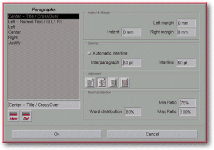

<!-- Documentation Xclamation (c)1994-2000 AXENE contact axene@axene.org>
<html>

<head>
<title>Paragraphs</title>
</head>

<body BGCOLOR="#FFFFFF" BACKGROUND="Images/back.gif" TEXT="#000000">

<p ALIGN="right">  </p>

<p><br>
<br>
This dialog box sets the display parameters for Xclamation texts. Paragraphs
specifications affect how words are displayed in a paragraph. This dialog box permits
format specifications to be named. These specs will be applied in the <a HREF="Box_Editor.html#paragraph_list">Text editor</a>. <br>
<br>
</p>

<hr>

<p align="center"><br>
 <br>
<small><i>Screen shot: Format dialog box </i></small></p>

<p><br>
</p>

<hr>

<p><br>
</p>

<h3>Left portion of the dialog box:</h3>

<ul>
  <li><a NAME="paragraph_list">The <b>format list</b> displays already defined specifications.
    When a specification is selected from the list, its characteristics appear on the right.
    Several elements may be selected from the list using the control key. Predefined
    specifications are stored in the </a><a HREF="ConfigParagraph.html">configuration files</a>.
  <br>&nbsp;</li>
  <li><a NAME="edit_paragraph_name">The text field located beneath the list allows <b>modification
    of the selected format's name</b>. </a><br>&nbsp;</li>
  <li><a NAME="button_new">The <i>&quot;Add format&quot;</i> button <b>creates a new format</b>
    specification. By default it will have the same characteristics as the selected
    specification, as well as the same name followed by a number. </a><br>&nbsp;</li>
  <li><a NAME="button_del">The <i>&quot;Delete format&quot;</i> button <b>deletes a format</b>
    specification. Formats used in the application or defined by the </a><a HREF="ConfigParagraph.html#lock">\LOCK</a> command in the <a HREF="ConfigParagraph.html">configuration
    files</a> cannot be deleted. <br>&nbsp;</li>
</ul>

<p><br>
</p>

<h3>The right portion of the dialog box:</h3>

<ul>
  <li><a NAME="textfield_alinea">The <i>&quot;Indent&quot;</i> text field <b>defines the size
    of the paragraph indentation</b> at the beginning of the paragraph's first line. The value
    of this indentation is expressed in millimeter and must be set between -500(mm) and
    500(mm). </a><br>&nbsp;</li>
  <li><a NAME="textfield_left_margin">The <i>&quot;Left margin&quot;</i> text field <b>defines
    the size of the left margin</b> of the paragraph. The value of the left margin is
    expressed in millimeter and must be set between 0(mm) and 500(mm). </a><br>&nbsp;</li>
  <li><a NAME="textfield_right_margin">The <i>&quot;Right margin&quot;</i> text field <b>defines
    the size of the right margin</b> of the paragraph. The value of the right margin is
    expressed in millimeter and must be set between 0(mm) and 500(mm). </a><br>&nbsp;</li>
  <li><a NAME="toggle_automatic_interline">The <i>&quot;Relative Line Spacing&quot;</i> button
    <b>selects the calculation method</b> for paragraph line spacing. There are two modes of
    calculation: <b>relative</b> and <b>absolute</b>. If relative mode is engaged, the value
    of the <i>&quot;line spacing&quot;</i> text field corresponds to the distance separating
    the bottom of a text line from the top of the following line. If relative mode is not
    engaged, absolute mode is in place; here <i>&quot;line spacing&quot;</i> designates the
    distance between the bottom of one text line to the bottom of the following line. </a><br>&nbsp;</li>
  <li><a NAME="textfield_interparagraph">The <i>&quot;Interparagraph&quot;</i> text field <b>defines
    the distance between paragraphs</b>. This value represents the distance in typographic
    points separating the last line of a paragraph from the first line of the following
    paragraph. This value must be set between 0(pt) and 1000(pt). </a><br>&nbsp;</li>
  <li><a NAME="textfield_interline">The <i>&quot;Interline&quot;</i> text field <b>sets line
    spacing</b>. The value is expressed in typographic points and must be set between 0(pt)
    and 1000(pt). The mode in which this value is displayed is determined by the <i>&quot;relative
    line spacing&quot;</i> button. </a><br>&nbsp;</li>
  <li><a NAME="icons_aligment">The four <i>&quot;Alignment&quot;</i> icons <b>choose the
    paragraph's alignment mode</b>. Only one of the four icons can be selected at a time.
    These icons represent the following modes of alignment (from left to right): align left,
    center, align right, and justify. </a><br>&nbsp;</li>
  <li><a NAME="textfield_word_distribution">The <i>&quot;Word distribution&quot;</i> text
    field sets a value, expressed as a percentage, which <b>determines distribution of empty
    space in a line of text</b>. The expressed percentage indicates the proportion of empty
    space to be distributed between the words of text. The remaining percentage will be
    applied to the space between letters. The larger the percentage, the smaller the space
    between letters, and inversely the smaller the percentage, the more space between the
    letters-leaving less space between the words. This value must be set between 0(%) and
    100(%). </a><br>&nbsp;</li>
  <li><a NAME="textfield_min_ratio">The <i>&quot;Min Ratio&quot;</i> text field <b>sets the
    minimum percentage of space in a line of text</b> which must be filled before passing to
    the following line. This ratio affects the ending of text lines: the smaller the
    percentage, the earlier the line can be cut, and inversely the nearer the percentage to
    100%, the longer the line must be before ending. This value must be set between 1(%) and
    100(%). </a><br>&nbsp;</li>
  <li><a NAME="textfield_max_ratio">The <i>&quot;Max Ratio&quot;</i> text field <b>sets the
    maximum percentage of space in a text line</b> which may be filled before passing to the
    following line. The larger this percentage, the more words fit per line by reducing the
    space between the letters and words. This value must be set between 100(%) and 1000(%). </a><br>&nbsp;</li>
</ul>

<p><br>
</p>

<h3>Lower portion of the dialog box:</h3>

<ul>
  <li><a NAME="button_ok"><i>&quot;Ok&quot;</i> <b>confirms all the actions</b> carried out on
    the list of format specifications and closes the dialog box. Any texts using the modified
    formats will be updated automatically. </a><br>&nbsp;</li>
  <li><a NAME="button_cancel"><i>&quot;Cancel&quot;</i> <b>cancels all commands</b> and closes
    the box. </a><br>&nbsp;</li>
</ul>

<p><br>
</p>

<hr>

<p ALIGN="right"></p>
</body>
</html>
